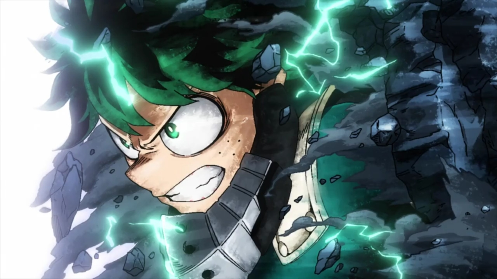
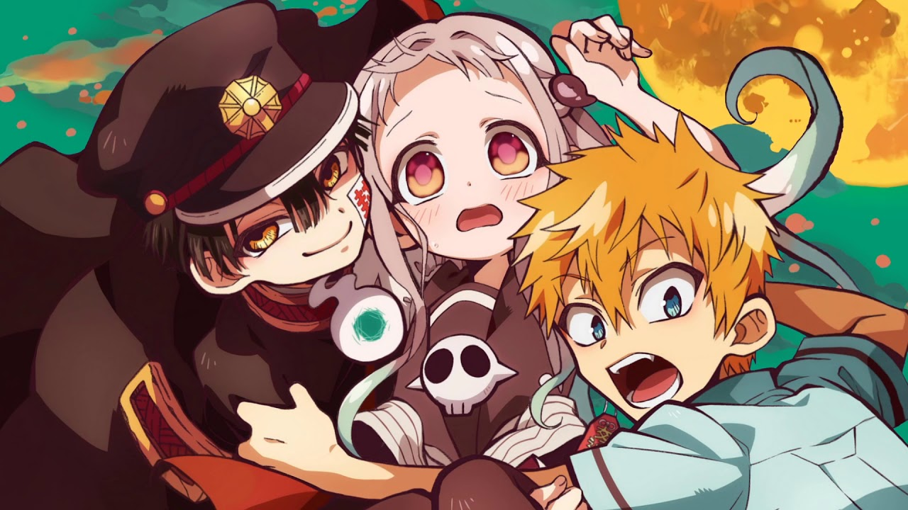
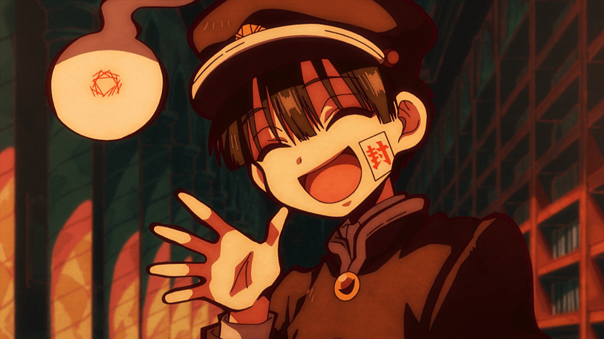
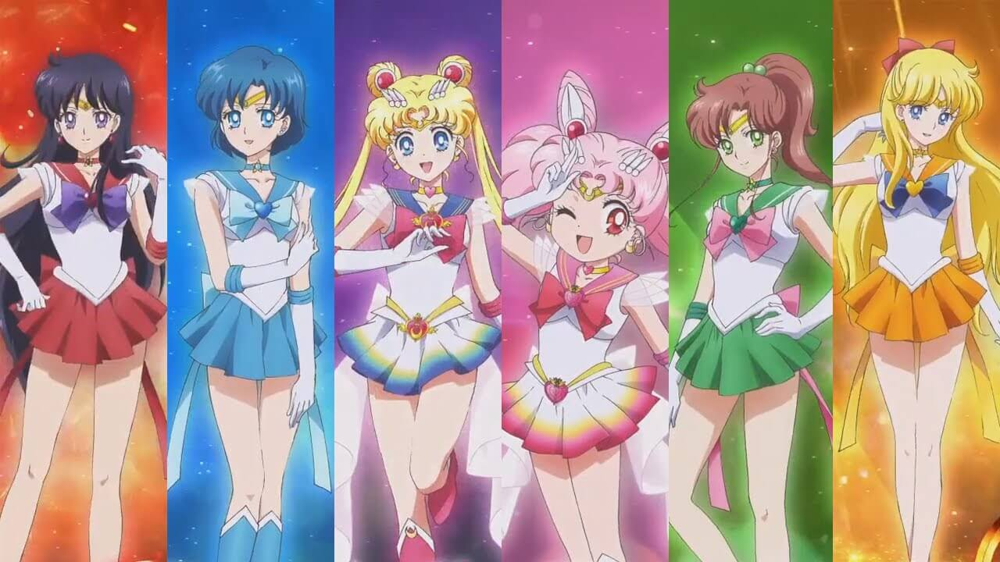
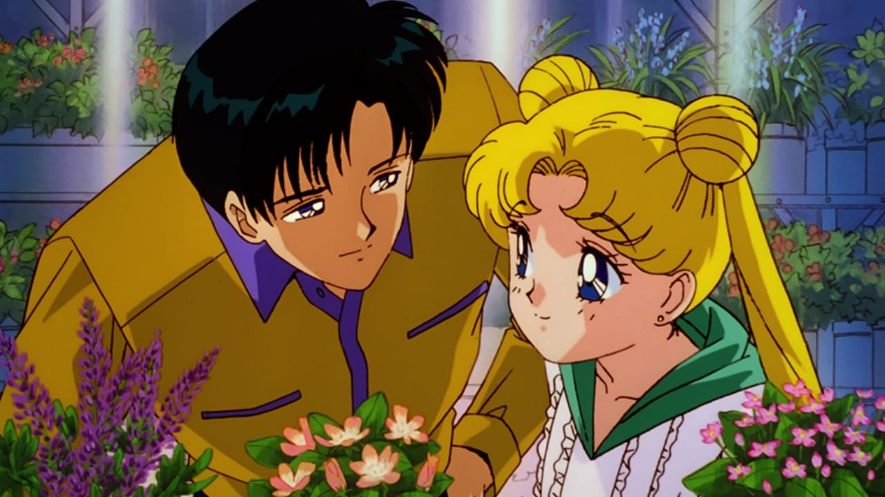

Boku no Hero


Boku no Hero Academia, também conhecido como My Hero Academia no ocidente, é uma série de mangá escrita e ilustrada por Kōhei Horikoshi. O enredo segue Izuku Midoryia, um adolescente que vive em um mundo onde 80% da população possui super poderes, o nosso protagonista tem a individualidade de não ter nenhum poder. E mesmo sem poder algum continua sonhando em um dia, assim como seu idolo, se tornar o Herói número 1. E um encontro com esse tal ídolo pode mudar todo seu destino.
Jibaku Shounen Hanako-kun


Também conhecido como Toilet Bound Hanako-kun, é uma série de mangá escrita e ilustrada por Iro Aida. O enredo se passa na Academia Kamome, onde existem muitos rumores sobre os Sete Mistérios da escola, um dos quais é Hanako-san. Os rumores dissem que ela fica na terceira cabine do banheiro das garotas do terceiro andar no prédio da velha escola e concede qualquer desejo quando convocado. Nene Yashiro, uma garota do colegial que adora o ocultismo e sonha com romance, se aventura nesse banheiro porém o Hanako-san que ela conheceu não é nada parecido com o das lendas, a Hanako-san da Academia Kamome é um menino! E durante esse tempo, eles tem lutar contra outras aparições que querem machucar os alunos.
Sailor Moon


O mangá do qual a obra foi inspirado foi escrito pela Naoko Takeuchi, e o enredo do anime se trata de uma garota de 14 anos chamada aqui no Brasil de Serena Tsukino que por coincidência encontra uma gata falante chamada Luna, que revela a identidade de Serena como Sailor Moon, uma guerreira mágica destinada a salvar a Terra das forças do mal. Luna então ditou as tarefas, como a de proteger o encontrar a Princesa Serenity, e proteger o Planeta Terra de vários antagonistas, como o Dark Kingdom, que há algum tempo destruiu o Reino da Lua.